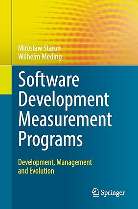

Engineering Generative AI Software
Engineering Generative-AI Based Software discusses both the process of developing this kind of AI-based software and its architectures, combining theory with practice. Sections review the most relevant models and technologies, detail software engineering practices for such systems, e.g., eliciting functional and non-functional requirements specific to generative AI, explore various architectural styles and tactics for such systems, including different programming platforms, and show how to create robust licensing models. Finally, readers learn how to manage data, both during training and when generating new data, and how to use generated data and user feedback to constantly evolve generative AI-based software.As generative AI software is gaining popularity thanks to such models as GPT-4 or Llama, this is a welcomed resource on the topics explored. With these systems becoming increasingly important, Software Engineering Professionals will need to know how to overcome challenges in incorporating GAI into the products and programs they develop.
Machine Learning Infrastructure and Best Practices for Software Engineers
Although creating a machine learning pipeline or developing a working prototype of a software system from that pipeline is easy and straightforward nowadays, the journey toward a professional software system is still extensive. This book will help you get to grips with various best practices and recipes that will help software engineers transform prototype pipelines into complete software products.
The book begins by introducing the main concepts of professional software systems that leverage machine learning at their core. As you progress, you’ll explore the differences between traditional, non-ML software, and machine learning software. The initial best practices will guide you in determining the type of software you need for your product. Subsequently, you will delve into algorithms, covering their selection, development, and testing before exploring the intricacies of the infrastructure for machine learning systems by defining best practices for identifying the right data source and ensuring its quality.
Towards the end, you’ll address the most challenging aspect of large-scale machine learning systems – ethics. By exploring and defining best practices for assessing ethical risks and strategies for mitigation, you will conclude the book where it all began – large-scale machine learning software.
Automotive Software Architectures: An Introdution
This book explores the concept of software architecture for modern cars and is intended for both beginning and advanced software designers. It mainly aims at two different groups of audience – professionals working with automotive software who need to understandconcepts related to automotive architectures, and students of software engineering or related fields who need to understand the specifics of automotive software to be able to construct cars or their components. Accordingly, the book also contains a wealth of real-world examples illustrating the concepts discussed and requires no prior background in the automotive domain. Compared to the first edition, besides the two new chapters 3 and 7 there are considerable updates in chapters 5 and 8 especially.

Action Research in Software Engineering
This book addresses action research (AR), one of the main research methodologies used for academia-industry research collaborations. It elaborates on how to find the right research activities and how to distinguish them from non-significant ones. Further, it details how to glean lessons from the research results, no matter whether they are positive or negative. Lastly, it shows how companies can evolve and build talents while expanding their product portfolio.
The book’s structure is based on that of AR projects; it sequentially covers and discusses each phase of the project. Each chapter shares new insights into AR and provides the reader with a better understanding of how to apply it. In addition, each chapter includes a number of practical use cases or examples. Taken together, the chapters cover the entire software lifecycle: from problem diagnosis to project (or action) planning and execution, to documenting and disseminating results, including validity assessments for AR studies.

Software Development Measurement Programs
This book seeks to promote the structured, standardized and accurate use of software measurement at all levels of modern software development companies. To do so, it focuses on seven main aspects: sound scientific foundations, cost-efficiency, standardization, value-maximization, flexibility, combining organizational and technical aspects, and seamless technology integration. Further, it supports companies in their journey from manual reporting to automated decision support by combining academic research and industrial practice.
When scientists and engineers measure something, they tend to focus on two different things. Scientists focus on the ability of the measurement to quantify whatever is being measured; engineers, however, focus on finding the right qualities of measurement given the designed system (e.g. correctness), the system’s quality of use (e.g. ease of use), and the efficiency of the measurement process. In this book, the authors arguethat both focuses are necessary, and that the two are complementary. Thus, the book is organized as a gradual progression from theories of measurement (yes, you need theories to be successful!) to practical, organizational aspects of maintaining measurement systems (yes, you need the practical side to understand how to be successful).